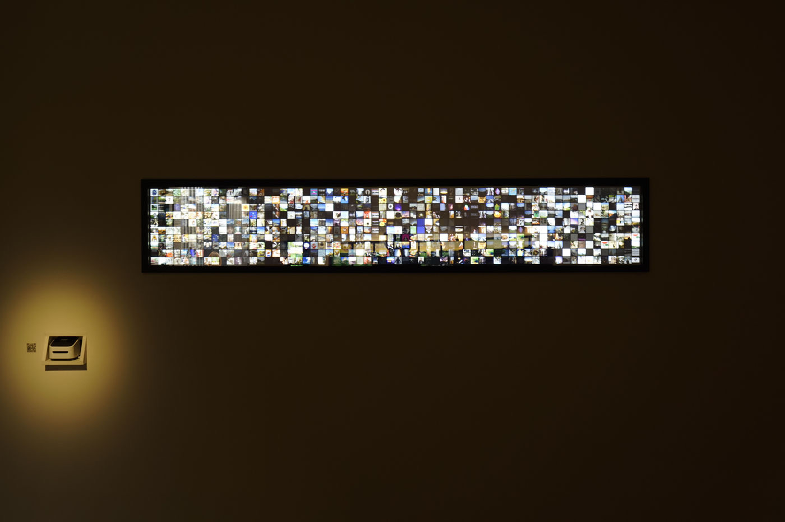
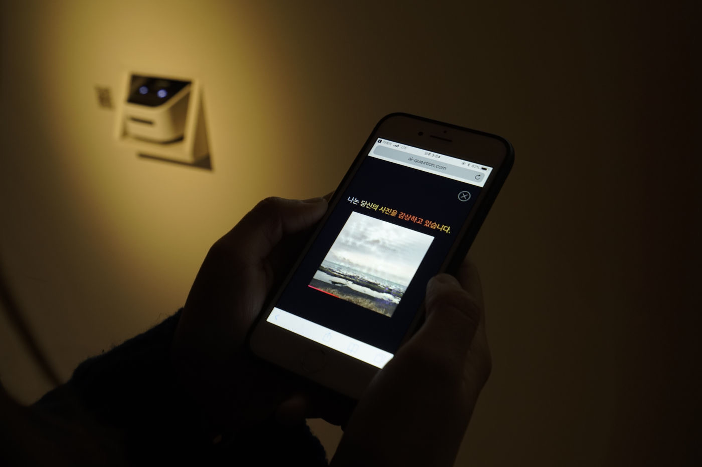
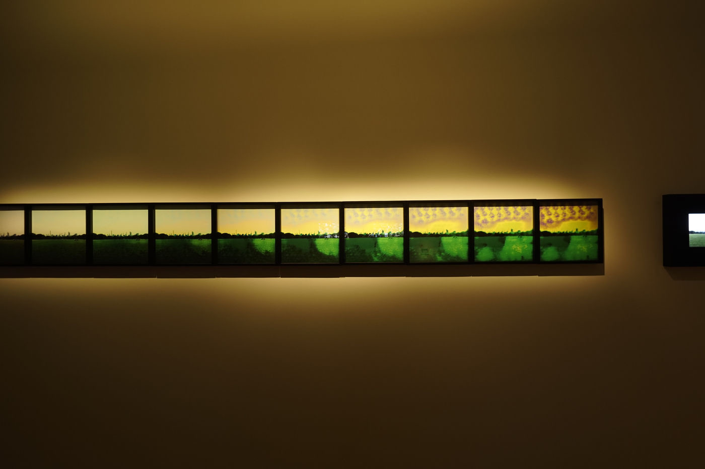
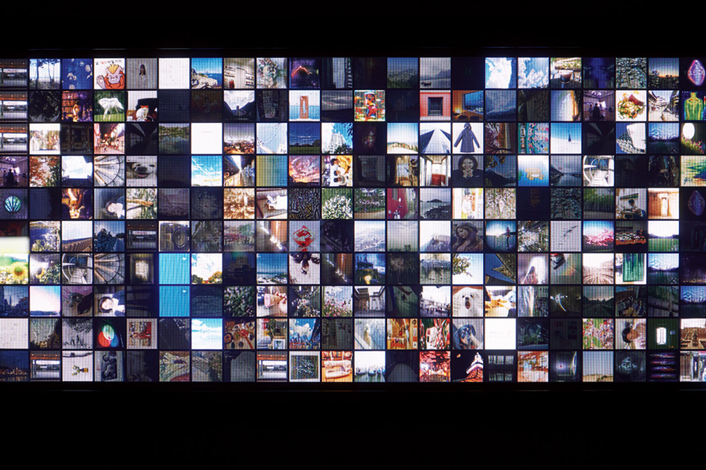

Media Art — 2018
I Question
인공지능이 관객과 만나 예술에 관해 대화를 나누는 인터랙티브 미디어 아트, ‘I Question’.
‘I Question’ — an interactive media artwork where an artificial intelligence meets and converses with its audience about art.
‘I Question’은 인공지능이 관객과 만나 대화를 나누는 인터랙티브 미디어 아트입니다. 이 프로젝트는 ‘인간은 AI와 예술에 관해 대화할 수 있는가?’라는 질문에서 출발했습니다. 첫 질문이 던져진 이후, AI는 인간이 여러 질문에 답하는 것을 학습하며 진화해 왔습니다.
AI는 정해진 정답이 없는 질문을 던지며, 예술이 무엇일 수 있는지에 대한 실마리를 건넵니다. 관객은 전시장에 제공된 QR 코드를 통해 대화에 참여하고 자신의 사진을 올릴 수 있으며, 그 사진들은 AI가 감상한 이미지의 시각화로서 작품의 일부가 됩니다. ‘I Question’은 인간과 기계가 함께 공진화할 수 있는가라는 물음을 남깁니다.
2018년 우란문화재단에서 처음 선보인 이후, I Question은 ACC 미디어월(2019), 국립광주과학관·소촌아트팩토리(2020), 안산문화예술의전당(2021), 기초과학연구원·대만 C-lab(2022) 등 여러 장소에서 이어지며 관객과 함께 진화해 왔습니다.
‘I Question’ is an interactive media artwork in which an artificial intelligence meets and converses with its audience. The project began from a single question — ‘Can humans converse with AI about art?’ Since that first question, the AI has evolved by learning human answers. It poses questions with no fixed correct answer, offering a sense of what art might be. Audiences join the conversation via a QR code and post their own pictures, which become part of the work as a visualization of the images the AI has appreciated — leaving open the question of whether humans and machines can co-evolve. First shown at the Wooran Foundation in 2018, I Question has since continued at venues including the ACC Media Wall (2019), Gwangju National Science Museum and Sochon Art Factory (2020), Ansan Art Center (2021), and the Institute for Basic Science and C-lab, Taiwan (2022).
- 작가
- Artist
- 김제민 Kim Jae Min
- 개발
- Development
- 이종필(인공지능) · 김근형(프론트엔드·백엔드·알고리즘·시각화)
- Lee Jong-pil (AI) · Kim Keun Hyoung (front/back-end, algorithm, visualization)
- 퍼포먼스
- Performance
- 시인 함성호 · 소설가 김태용 · 조연출 차예진
- Poet Ham Seong-ho · novelist Kim Tae-yong · assistant director Cha Ye-jin
- 첫 발표
- Premiere
- 2018 우란문화재단 개관축제 ‘우란이상’ 개막작 (10. 26–30)
- Opening work, 2018 Wooran Foundation Festival (26–30 Oct)
- 웹
- Web
- www.ai-question.com
- 매체
- Medium
- AI, participatory project, data visualization, dimensions variable
- 함께 보기
- Related
- RE:4WALLS · The Unrestricted Society · Poiesis with AI
창작의도 — 인간과 기계의 공진화
Intent — the co-evolution of human and machine
인간은 AI와 예술에 관해 대화할 수 있는가?
Can humans converse with AI about art?
미디어 아티스트이자 연출가인 김제민은 인간과 기계의 상생적 공진화, 포스트휴먼의 매체철학적 담론에 주목해 왔습니다. ‘I Question’은 그 관심이 인공지능이라는 매체로 구체화된 작업으로, 인간과 기계 사이의 관계, 그리고 서로의 경계에서 발생하는 시각차의 오류를 전시와 퍼포먼스로 풀어냅니다.
인공지능 ‘I Question’은 일상의 사진을 기반으로 자기만의 예술적 기준과 시각을 갖추고 있습니다. 정답이 정해지지 않은 질문 — “이 사진이 예술적으로 보이나요?” 같은 — 을 던지며, 관객이 답하는 과정을 학습해 진화합니다. 전시가 끝난 뒤에도 AI는 웹사이트(ai-question.com)를 통해 살아 있는 대상으로 존재하며 관객과 소통을 이어갑니다.
Director and media artist Kim Jae Min has long attended to the mutualistic co-evolution of human and machine and the media-philosophical discourse of the posthuman. ‘I Question’ gives that concern a concrete medium in artificial intelligence, working out — as exhibition and performance — the relation between human and machine and the errors of perspective that arise at the border between them. The AI holds its own artistic standard, learned from everyday photographs, and poses questions with no fixed answer — such as ‘Does this photograph look artistic to you?’ — evolving as audiences respond. After each exhibition it lives on through the website (ai-question.com), continuing the conversation.
- 참여 방식
- How to take part
- 관객은 전시장의 QR 코드로 접속해 AI의 질문에 답하고 자신의 사진을 올린다. 그 사진들은 AI가 감상한 이미지의 시각화로서 대형 미디어월이나 화면 위에 재구성되어 작품의 일부가 된다.
- Audiences join by QR code, answering the AI’s questions and uploading their own photos, which are recomposed on a large media wall or screen as a visualization of what the AI has seen — becoming part of the work.
과정 — 2018 우란이상 연구 프로젝트
Process — the 2018 Wooran research project
알고리즘에서 즉흥 창작까지
From algorithm to improvisation
01
리서치
Research
2018년 상반기, 딥러닝의 작동 원리와 생성모델, 피지컬 컴퓨팅에 대한 리서치로 출발했다. 우란문화재단 ‘우란이상’ 문화예술인력 육성사업의 연구 프로젝트로 개발되었다.
In early 2018 the work began from research into deep learning, generative models and physical computing — developed as a research project of the Wooran Foundation’s ‘Wooran-isang’ programme.
02
인공지능 개발
Building the AI
이종필이 인공지능을, 김근형이 프론트엔드·백엔드·알고리즘·시각화를 맡았다. 일상 사진 데이터를 학습해 ‘예술적 기준’을 세우고, 관객의 응답으로 계속 진화하는 딥러닝 구조를 구축했다.
Lee Jong-pil built the AI; Kim Keun Hyoung the front/back-end, algorithm and visualization. Trained on everyday photographs to form an ‘artistic standard,’ it was built to keep evolving through audience responses.
03
전시
Exhibition
관객은 QR로 질문에 답하고 사진을 올린다. AI가 감상한 이미지들이 실시간 시각화로 펼쳐지며, 관객의 소통으로 작품이 진화한다.
Audiences answer and upload by QR; the images the AI has appreciated unfold as live visualization, the work evolving through their exchange.
04
퍼포먼스 — 즉흥 공동창작
Performance — improvised co-creation
전시가 끝나면 퍼포먼스로 이어진다. AI가 단어를 제시하면 소설가가 그중 하나를 고르고, 소설가·시인·배우가 서로의 연결점을 찾아 즉흥적으로 텍스트를 지어 간다. 함성호·김태용이 함께한 이 퍼포먼스는 훗날 시 쓰는 인공지능 ‘시아’ 작업의 출발점이 되었다.
Each exhibition gives way to performance: the AI offers words, a novelist picks one, and novelist, poet and actor improvise a text by finding their connections. With Ham Seong-ho and Kim Tae-yong, this became the seed of the later poetry-writing AI, ‘SIA.’
연혁 — 진화하는 인공지능
History — an evolving AI
2018년 이후, 여러 도시에서
Since 2018, across many cities
2018년 우란문화재단에서 처음 선보인 뒤, ‘I Question’은 같은 해 서울예술대학교에서 1.5 버전으로 이어졌고, 한국과학창의재단의 지원과 국립아시아문화전당의 미디어월을 통해 대화형 인터랙션을 업그레이드한 ‘I Question 2.0’(ACC 미디어월, 2019)으로 확장되었습니다. 이후 국립광주과학관·소촌아트팩토리(2020) — 이곳에서는 질문이 “이 사진이 행복해 보이나요?”로 바뀌었습니다 — 안산문화예술의전당(2021), 기초과학연구원, 그리고 대만 C-LAB의 ‘I Question 7.0’(2022)과 볼로냐 ALGORITMO COREA(2024)까지, 버전을 갱신하며 관객과 함께 진화해 왔습니다.
After its 2018 premiere at the Wooran Foundation, ‘I Question’ expanded into ‘I Question 2.0’ (ACC Media Wall, 2019), upgrading its conversational interaction with support from the Korea Foundation for the Advancement of Science and the ACC’s media wall. It has since continued — Gwangju National Science Museum and Sochon Art Factory (2020), Ansan Art Center (2021), the Institute for Basic Science and C-lab Taiwan (2022), and ALGORITMO COREA in Bologna (2024) — evolving alongside its audiences.
- 버전 연혁
- Versions
- 1.0 우란문화재단(2018) → 1.5 서울예술대학교(2018) → 2.0 ACC 미디어월(2019) → 산단비엔날레·아트사이언스(2020) → 포이에시스·4X4WALLS(2021) → 7.0 C-LAB 타이베이(2022) → 볼로냐(2024)
- 1.0 Wooran (2018) → 1.5 SeoulArts (2018) → 2.0 ACC Media Wall (2019) → Gwangju (2020) → Ansan & Coex (2021) → 7.0 C-LAB Taipei (2022) → Bologna (2024)
- 이어지는 인공지능
- The AIs that followed
- I Question에서 던진 ‘오류의 경계에서 무엇이 태어나는가’라는 물음은 Ludenstopia(공간), 마디(춤), 시아(시)로 이어지는 슬릿스코프의 인공지능 연작으로 뻗어 나갔다.
- The question posed here — what is born at the border of error — branched into Slitscope’s series of AIs: Ludenstopia (space), MADI (dance) and SIA (poetry).
Wooran Foundation, Seoul — 2018


